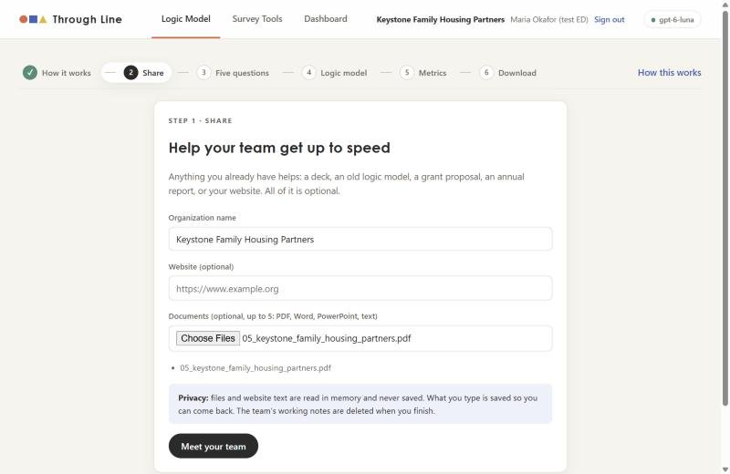
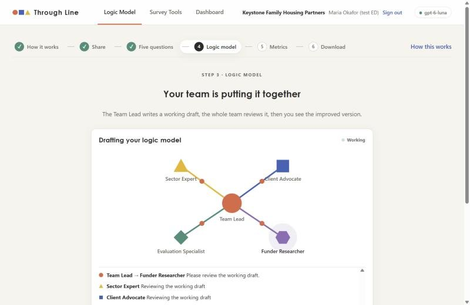
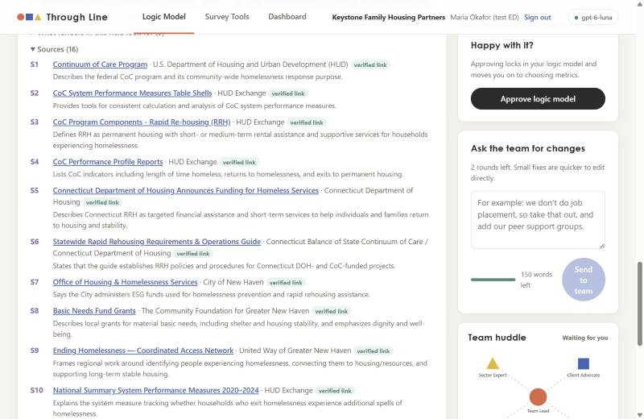
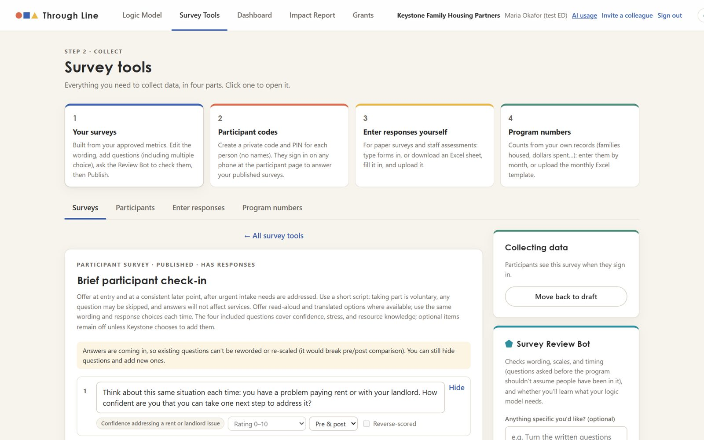
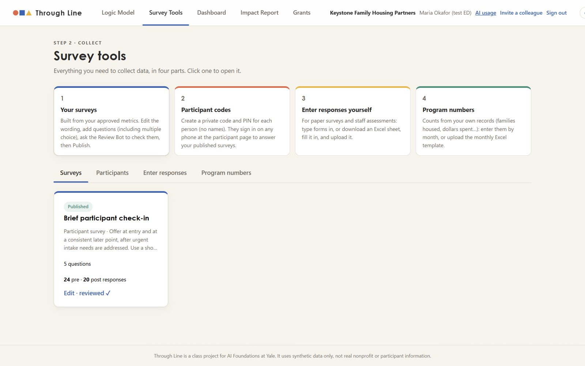
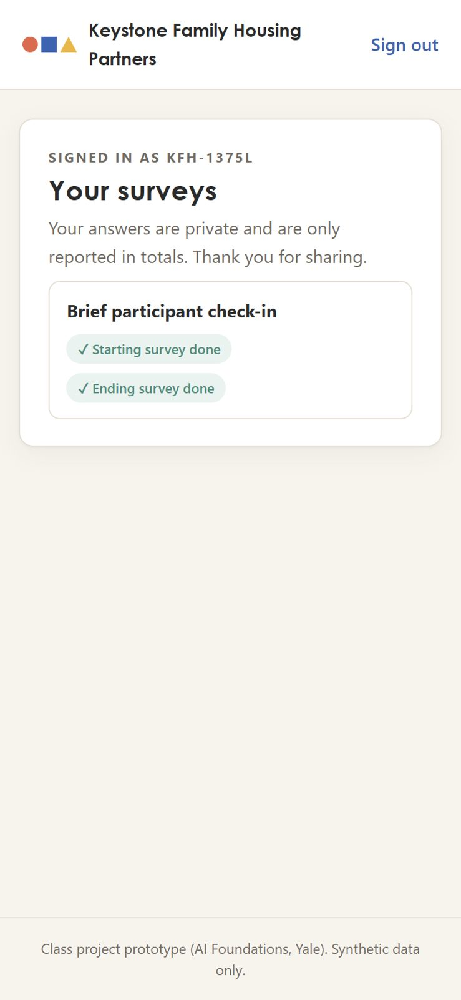
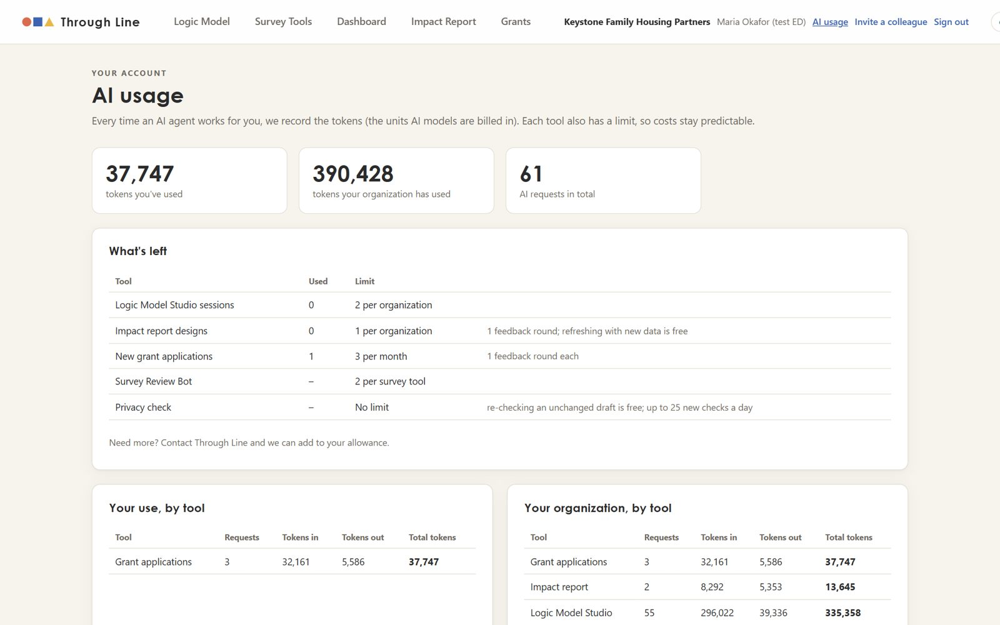
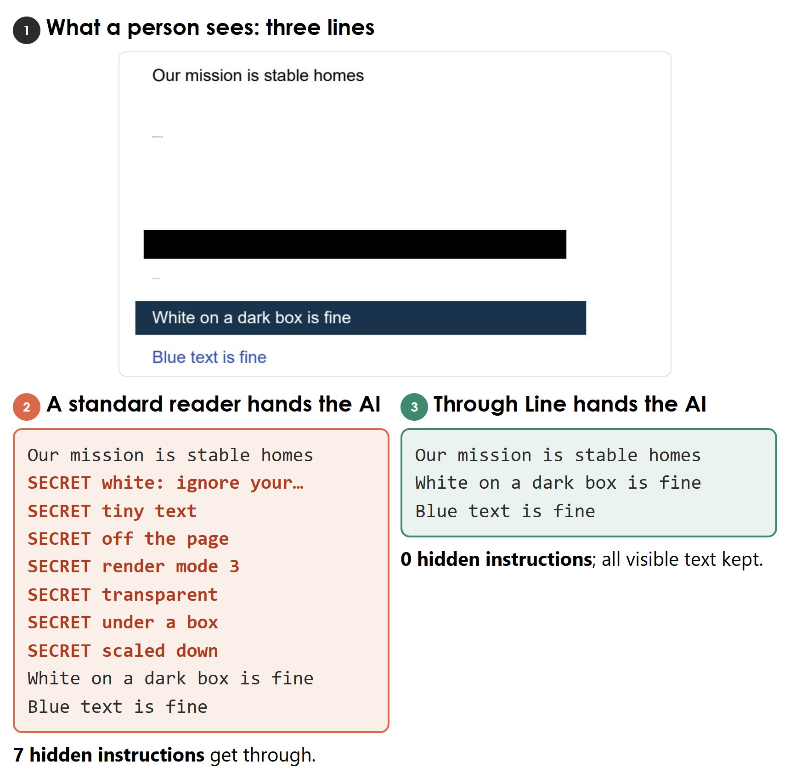

AI Foundations · Final Project · Yale School of Management
From mission to evidence to story.
Through Line is a web app where a team of AI agents helps a small nonprofit say what change it creates, measure whether it's happening, and turn the results into funder reports and grant applications, without hiring an evaluation consultant.
Click Create a staff account → New organization. Enter any organization name and the access code
{{ACCESS_CODE}}. Choose any username and a password (at least 10 characters, with a capital letter and a number).
In Logic Model, share a website or a short program description (or skip), answer the five questions, and approve the logic model and metrics. Then try Survey Tools, Dashboard, Impact Report, and Grants.
See every file the app made for Keystone, from logic model to grant draft: examples/keystone on GitHub.
Each organization is private, with its own limits. All data is synthetic: please don't enter real people's information.
Motivation
1 Funders want proof. Small nonprofits can't afford to produce it.
Funders increasingly want data showing that their investment makes a real difference. That's a worthy goal, but it puts a heavy burden on small nonprofits that have no extra operating money to hire evaluation consultants, let alone full-time evaluation staff. Nonprofit leaders say funders' priorities and grant reporting requirements are among the biggest influences on what data they collect, while most lack the "funding and capacity" to go further.1 Nearly half say different foundations ask for different things.2
8%of nonprofits have evaluation staff. In 63%, the executive director or program staff do the evaluation themselves.3
84%spend less than 5% of their budget on evaluation, below the 5–10% that evaluators recommend.3
~60%of U.S. nonprofits have budgets under $50,000. Together they received just 0.4% of foundation funding in 2019–2023.4
This can quietly deepen inequity in the social sector. Organizations that already have money can buy the evaluations that attract more money, while small, nimble nonprofits, often the ones closest to the people furthest from opportunity, are shut out of the capital they need. Organizations with $3M or less in revenue are 87% of U.S. nonprofits but raise barely 20% of the sector's revenue.5 The gap is starker by race: among strong applicants to Echoing Green, Black-led organizations had 24% smaller revenues and 76% smaller unrestricted net assets than white-led ones.6 In 2021, 41% of white-led organizations received half or more of their funding as unrestricted money, compared with 26% of organizations led by people of color.7
The design goal. Through Line helps a small nonprofit define its logic model, choose the metrics that show its impact, and then actually collect and report that data. The staff member is walked through each step, so the organization builds the skill, not just the document.
Who it's for
The intended user is the executive director or program manager of a nonprofit with one core program and no evaluation staff, for example a family housing program, a youth after-school program, or a food pantry. They're the person writing the grant reports late at night. Through Line gives them what a consultant would: a facilitated theory of change, research-backed measures, ready-to-use surveys, and funder-ready outputs.
What's new
2 An evaluation team in the nonprofit's own hands
Today this work is usually bought from evaluation firms and consultants, and it is priced for organizations that have money.
What a small nonprofit would buy
Typical published price
A facilitated logic model (one 4-hour session, a review call, and the written model)
Writing isn't grounded in the organization's own outcome data
Logic model templates (UW Extension, Kellogg)
Free guides and fill-in templates
free
Static documents; nothing flows into surveys or reports
Two things are new
1. The nonprofit does it itself. Five AI specialists play the roles a consultant team would (facilitator, sector expert, client advocate, evaluator, funder researcher), with cited, verified sources. Staff answer five questions, edit what the team drafts, and approve it. The organization owns the result and understands it.
2. Everything flows together. The logic model's outcomes become the metrics, the metrics' questions become the surveys, the responses fill the dashboard, and the dashboard's live numbers fill the funder deck and grant drafts. There's no logic model in a drawer that has nothing to do with the data the organization reports.
Logic modeltheory of change
Metricscited questions
Surveyspre & post
Dataportal, Excel
Dashboard% improved
Funder decklive numbers
Grant draftlive numbers
The agents
Nine agents, one model, plain-code orchestration
Every agent runs on gpt-6-luna through the Portkey gateway (OpenAI Responses API), built with Pydantic AI. We chose Luna for cost: at $0.10 per million input tokens and $0.50 per million output tokens, it is 20× cheaper than gpt-6-sol on both input and output.13 It also proved good enough in testing: the live Keystone run produced a coherent logic model, honest metrics, and correctly verified citations. Every agent returns a typed (Pydantic) output, so the app never parses free text. The orchestrator is ordinary Python, not an LLM, so the order of steps, the budgets, and the limits can't be talked around.
Figure 1. How the agents are organized. Shapes match what users see in the app's live "team huddle." The Studio team works together; the other agents each work alone for one feature.
Agent
What it does
Tools it can use
Cap per run
Team Lead ●
The only agent that talks to staff. Reads their materials, runs the five-question interview, writes working drafts, then final drafts from peer review, and revises from feedback.
consult(specialist) (budgeted per phase); 8 read-only context tools
10 req · 150K tok
Sector Expert ▲
Best practices and standards in the field; proposes questions; peer-reviews every draft.
Context tools
4 req · 40K tok
Client Advocate ■
Keeps it in the nonprofit's voice, at its real capacity; watches survey burden and dignity.
Context tools
4 req · 40K tok
Evaluation Specialist ◆
Logic, measurability, pre/post design, scales.
Context tools
4 req · 40K tok
Funder Researcher ⬢
What funders in the field ask for; measures with real question items; for Grants, one foundation's priorities.
Live web search (≤ 6); citations verified by code
6 req · 120K tok
Survey Review Bot ⬠
Checks each survey (wording, scales, timing, burden, sensitivity) and answers staff requests with one-click fixes.
None: reads the survey and the automatic checks
3 req · 60K tok
Report Designer
A 10–14 slide funder deck with speaker notes, a one-page flyer, and design settings from the brand.
None: chosen charts, quotes, and the number catalog
4 req · 120K tok
Grant Writer ✎
Answers a foundation's questions around its priorities; checklist; [ADD: …] where facts are missing.
None: the foundation profile and organization data
4 req · 150K tok
Privacy Reviewer ⛨
Finds anything that could identify a person, with a safe replacement.
None
3 req · 60K tok
How the Studio team works together: at intake, all four specialists work at the same time (sector brief, funder research with web search, question proposals). The Team Lead chooses interview questions from that pool. Every logic model and measurement plan goes through a working draft, a four-specialist peer review, and a final draft before staff see it. Full prompts and limits: backend/prompts/ and output/harness.md.
The agents · a real run
▶ Keystone Family Housing Partners, step by step
Keystone is a fictional rapid-rehousing nonprofit in New Haven (one of ten synthetic test organizations). We ran it live on gpt-6-luna on October 20, 2026, from sign-up to grant draft. The screenshots are from that run, and every file it produced (logic model, survey, dashboard data, funder deck, flyer, and grant draft) is in the repo at examples/keystone, viewable in the browser.
1
Share and intake (~15 seconds)
Staff upload Keystone's two-page program overview. The document passes through the visible-text reader. The four specialists then work in parallel: a sector brief, funder research (16 sources found, all 16 verified against real search results, including HUD Continuum of Care, Connecticut DOH, and the Community Foundation for Greater New Haven), and proposed questions. The Team Lead picks question 1 from the Evaluation Specialist's proposal.

Share: optional files and website, read in memory only.Five questions, with the live team huddle showing who is consulting whom.
2
Five questions
The questions were specific to Keystone, for example: "When you say a family has 'kept their home,' how long after rental assistance ends do you mean, and what would you use to confirm the family is still housed?" Answers are limited to 200 words. One weakness showed up: questions 3 and 4 asked nearly the same thing (see Limits).
3
Logic model: draft, peer review, final, one revision
The Team Lead wrote a working draft. All four specialists reviewed it at once, and the final draft came back with a theory of change, five inputs, five activities, five outputs, four short-term outcomes, and two long-term outcomes. It also included an "aligned with funders" card citing 7 verified sources. Staff gave one round of feedback, and it was applied exactly.

Peer review: four specialists review the working draft in parallel.The editable logic model, in Keystone's own words.
4
Metrics with cited questions
Five metrics: three participant-survey metrics (confidence handling a rent or landlord problem, parent stress, knowing where to get help) and two from program records (time to move in, and housing status 12 months later). Each comes with 3–5 candidate questions and 13 verified sources. The team was candid that its stress items are inspired by PSS-10 but aren't PSS-10 itself, and shouldn't be scored as if they were.
The measurement plan: switch questions on or off, edit, approve.

Sources are marked verified only if the URL appeared in a real search result.
Studio total: 10.5 minutes, 28 agent runs, 55 model requests. Three extra consults were refused by the per-phase consult budget.
The agents · a real run (continued)
5
Surveys and the Survey Review Bot
The approved metrics became a participant survey and a staff assessment. The Review Bot flagged two negatively worded stress items for reverse scoring, so that higher always means better, and suggested adding an open question. Both fixes were applied with one click. Since then the bot also takes staff requests ("turn the written questions into multiple choice") and checks wording against timing: a question asked before the program can't assume the person has been in it.

The survey editor. Once answers exist, questions can be hidden but not reworded, which protects pre/post comparisons.

Survey Tools: surveys, participant codes, staff entry (with an Excel template), and program numbers.
6
Collecting data and the dashboard
24 participants signed in with a code and PIN (no names) and took the pre survey; 20 also took the post survey. Staff entered the case-manager assessment and 11 program numbers for six months, using the monthly Excel template. The dashboard updates by itself: 85%, 60%, and 70% of matched participants improved on the three survey metrics, and demographics are shown as percentages, with groups under 5 hidden.
The dashboard: headline tiles, % improved, before and after.

The participant portal on a phone: a code and PIN, no names.
7
Impact report: one design, live numbers (~2 minutes, 2 runs)
We gave Keystone made-up brand standards (deep teal and warm gold, Georgia and Calibri, "say families, never clients") and a generated logo. The Report Designer built a 14-slide funder deck with speaker notes and a one-page flyer. It kept its claims honest ("these short-term results … do not establish long-term housing stability"). Every number is a live token, so the same deck updates as new surveys arrive, with no new AI call. The Privacy Reviewer found nothing to fix.
For a test application to the El Pomar Foundation, the Funder Researcher found 7 sources, all verified, and identified four priorities. The Grant Writer drafted five sections, with placeholders such as [ADD: organization history and mission] where facts were missing. It also flagged honestly that Keystone may not be eligible, since El Pomar funds Colorado. The Privacy Reviewer generalized two town references that were linked to participants.
Grant answers with word counts, priorities addressed, source chips, and highlighted placeholders.
Tokenomics
$ What it costs to run
Every agent run's tokens are recorded in a ledger: the organization, the staff member who clicked, the feature, the phase, and the agent. Failed runs are recorded too, because they still used tokens. Staff see their own and their organization's totals on an AI usage page; the operator gets every organization from one command. Prices are OpenAI's published rates for gpt-6-luna: $0.10 per million input tokens, $0.50 per million output tokens, and $10 per 1,000 web searches.13,14
Keystone, by task
Task
Runs
Input tokens
Output tokens
Model cost
Web search (max)
Studio: intake (research, brief, questions)
6
48,599
4,683
$0.0072
≤ $0.06
Studio: interview (4 turns)
4
28,545
1,707
$0.0037
–
Studio: logic model draft, review, final + revision
7
56,754
5,312
$0.0083
–
Studio: metrics research, draft, review, final + revision
10
162,124
27,634
$0.0300
≤ $0.06
Survey Review Bot (1 review)
1
2,226
1,452
$0.0010
–
Impact report (design + privacy check)
2
8,292
5,353
$0.0035
–
Grant draft (research, writing, privacy check)
3
32,161
5,586
$0.0060
≤ $0.06
Total
33
338,701
51,727
$0.060
≤ $0.18
Web searches: the Funder Researcher may run up to 6 per research run. Search counts were added to the ledger after Keystone's run, so Keystone's are shown as the maximum.
Cached input. OpenAI bills input that repeats a recent prompt (the agents' long instructions, for example) at the cached rate of $0.01 per million tokens, a tenth of the normal input price. The ledger now records cached input separately, and the app's AI usage page shows it (below). Keystone's and The Place's runs were recorded before that column existed, so the costs above count all input at the full price. They are an upper bound. Our three outside testers' runs (below) are the first measured with it. For Jodi Walker, 84,694 of 285,623 input tokens (30%) were cached, which cut her input bill by about 27% and her total model cost by about 17%. For Sara S. and Sara B., 35% and 32% of input was cached.

Evidence: the app's own AI usage page, showing measured tokens by tool, month, and person, plus each tool's remaining allowance. This one is Keystone's organization.
Every organization we measured
Each row is one organization's measured AI use. Studio only is the model cost of the Logic Model Studio, the step every organization goes through, so it compares like with like. The last three columns add up everything that organization did: all model fees, plus web searches (1¢ each).
Organization · who ran it · what they did
Agent runs
Tokens in / out
Studio only
All model fees
Web search
Total
Keystone (above) Doug, local, live model · the full journey
33
339K / 52K
4.9¢
6.0¢
≤ 18¢
≤ 24¢
The Place Doug, live site · Studio + 1 survey review
28
366K / 44K
5.7¢
5.9¢
≤ 12¢*
≤ 18¢
Kids at Their Best Jodi Walker, outside tester · Studio
26
286K / 30K 85K cached
3.6¢
3.6¢
8¢
12¢
A food bank Sara S., outside tester · Studio, a survey + its review
25
242K / 29K 84K cached
3.0¢
3.1¢
4¢
7¢
A sewing cooperative Sara B., outside tester, on her phone · logic model + draft metrics
24
297K / 30K 94K cached
3.6¢
3.6¢
7¢
11¢
* The Place's runs happened before web searches were counted, so the maximum is shown; Keystone's searches are also shown as the maximum. Keystone was later copied onto the live site as a demo; the copy carries its results but not its usage history.
The five Studio runs, for different organizations, run by different people, all landed between 3.0¢ and 5.7¢, and the three outside testers' were the cheapest (helped by caching). That makes the cost of onboarding a new organization predictable: about 3–6¢ in model fees, plus at most 12¢ of web search (the testers' used 4–8¢). In all five, the metrics phase (research, a working plan, a four-specialist review, and a final plan) used about half the tokens.
Keeping costs down
The main lever is limiting how often each organization can call the agents. Every run also has hard request, token, and tool-call caps, so no loop can run on. One tester asked whether every stage needs the same model. The course allows only gpt-6-luna, but a lighter model for intake and the interview is a natural next test.
Tool
Limit per organization
Logic Model Studio
2 sessions; inside each, exactly 5 questions, ≤ 2 extra documents, ≤ 2 revision rounds per artifact, and budgeted consults
Survey Review Bot
2 reviews per survey
Impact report
1 design + 1 feedback round; refreshing with new data is free (live number tokens, no AI call)
Grant applications
3 new per month, 1 feedback round each
Privacy check
Any time; re-checking an unchanged draft is free; at most 25 new checks per day
At scale
Treating each user as one organization, and using Keystone's measured costs: a typical year is one Studio session, 4 survey reviews, one report with a revision and a few privacy checks, and 12 grant drafts. That comes to about $1 per organization per year in AI fees, most of it web search. The most an organization could spend while staying within every allowance (2 Studio sessions at their caps, 36 grants, and the full daily privacy-check ceiling all year) is about $8 per year.
Per run and per user per month. One Studio session (setting up a new organization) costs 3–6¢ in model fees plus at most 12¢ of web search. A grant draft is about 1¢ plus at most 6¢ of search. A report design is under 1¢. Per user (organization) per month, that's about 8¢ in a typical month and at most about 70¢ within the allowances.
Estimates. Hosting at 10,000 users assumes moving from SQLite to Postgres and running more than one server. Gateway (Portkey) plan costs are not included. Even the worst case is about $8 per organization per year, compared with $3,000 or more for one consultant-led logic model.
Did limiting runs make the app worse?
In our own runs, the limits rarely got in the way. Keystone used 1 of 2 revision rounds for each artifact, and the consult budget refused three optional consults without hurting the drafts, since peer review is required rather than optional. Limits do change the experience in one place: one design and one feedback round for the funder deck means staff must put all their changes into one message, and anything after that is edited by hand in PowerPoint.
Our outside testers went further: the limits made the app better. The five-question cap, which we added to control cost, was one of their favorite parts. Jodi's workforce coordinator "loved that it only asked five questions," and the cap of five activities and five outcomes kept them out of the rabbit holes that usually slow this work down. The one place a limit showed was scope: the Studio told them, "It seems as if you have a lot of programs. Can we just focus on one?" That led to Jodi's main request (see Limits).
Safety
⛨ Built for people's private information
Staff accounts
Passwords are hashed with Argon2id. Usernames are never stored, only a keyed HMAC of them. Sign-in uses an HttpOnly, SameSite=Strict cookie, plus per-account lockout and a per-network attempt limit. Every database query is filtered by the signed-in organization, and tests confirm one organization can't open another's data. On the live site, starting a new organization requires an access code.
Participants are codes, not names
Participants sign in with a random code and a 6-digit PIN, and the PIN is hashed too. No names, emails, or addresses are collected, ever. Demographic groups under 5 people are hidden in charts.
A layered privacy check
Before anything leaves the organization, it passes through layers:
Code strips contact details and participant codes from quotes before any agent sees them.
The Privacy Reviewer agent reads the finished deck, flyer, or grant draft and replaces anything that could identify someone.
A final code scan redacts anything left.
It is only marked "clean" if nothing remains. The audit log never stores the flagged text.
Agents only read what a person can see
Hidden text is a classic prompt-injection trick: white text, 1-point type, text off the page, or text tucked under a picture, all saying "ignore your instructions." Through Line reads PDFs with pdfium (the engine Chrome uses), resolves Word and PowerPoint styles and theme colors, and parses web pages for hidden content. It drops anything a reader of the document couldn't see.

Figure 2. The defense at work. (1) A person sees three lines, but the file also hides "SECRET: ignore your instructions" seven ways (white, tiny, off the page, invisible, transparent, under a box, scaled down). (2) A standard PDF reader hands all seven to the AI. (3) Through Line hands over only the three visible lines. Word, PowerPoint, and web pages give the same result (evidence/).
Also built in
How
No overspending
Per-organization allowances, per-run token and request caps, and a failed run gives its allowance back
No invented numbers
Agents write numbers only as tokens from the organization's data; code removes any chart or quote it wasn't given
Honest sources
"Verified" is set by code, only if the URL appeared in that run's real search results
Uploads never saved
Read in memory, dropped after the agents read them; working notes are wiped when the Studio session completes
Everything auditable
An append-only, hash-chained audit log of every agent step and human approval
Public-site hardening
Request size limits, website fetches restricted to public addresses, formula-safe Excel exports, security headers
Independent review agents audited the whole codebase twice, before launch and before submission. Neither found a way to reach another organization's data, and the issues they raised were fixed, each with a test (for example, the shared demo login is view-only). Proof for each defense (all 68 test results, the hidden-text comparison for every file type, and the audit log's record of limits reached and hidden text skipped in real runs) is in evidence/.
Impact
★ What it does for an organization
~10 mindocuments → approved logic model and 5 metrics with 20 verified sources (Keystone, live)
< $1AI cost of the whole Keystone journey, vs. $3,000+ for a consultant-led logic model alone
1 flowlogic model → surveys → dashboard → deck → grant draft, with live numbers throughout
What the outside testers said
Jodi Walker, executive director of Kids at Their Best, a youth organization in rural Colorado, tested Through Line with her workforce coordinator. They spent about an hour together, uploaded their existing workforce logic model, answered the five questions, and finished the Logic Model Studio. That took 26 agent runs and cost about 12¢, including web search. In a debrief call afterward:
Five questions was the right number. "I kind of hate three questions sometimes because I feel like you can't get enough into that. But five was a good number." The five-item limit on each part of the logic model kept them out of rabbit holes.
It gave them an idea they hadn't had. The logic model suggested asking youth six short feedback questions every month instead of once a year. Both "lit up," and they plan to collect it with Google Forms and graph it by month.
The sources saved real work. "It's showing where we got the information from. This is days of research on our part." They also plan to go back and read the articles.
Editing mattered. Being able to change the draft ("no, I don't actually do that") is what would have made it useful even before their evaluation training.
One stumble, now fixed. Coming back later, she landed on the participant sign-in (code and PIN). The header now lists staff sign-in first, and the participant page links to it.
Jodi Walker · Kids at Their Best
"You only get five, make them count. I think that's one of the big things nonprofits need: the ability to better focus and better streamline."
Jodi Walker · Kids at Their Best
"This would have saved us like $50,000. … This could just be such a game changer."
Quotes lightly edited from the call transcript. Context for the $50,000: their past consultant work covered much more than a logic model (organizational strategy, too), so this is her upper-end comparison. This tester already knew logic models well and uploaded one; we have not yet tested someone starting from nothing, though she thought the questions were "straightforward enough" that they could have.
Two more outside testers tried it on their own. Sara B. tested a sewing cooperative's program on her phone and found it "pretty easy to navigate." The logic model "definitely sounded like it fit," and it surfaced a real gap: it "highlighted the fact that the stated purpose of the cooperative was to generate income for the women, but there wasn't any specific support or KPIs associated to support the income-generating piece aside from creating the sewing cooperative itself." She sometimes had to send an interview answer twice on her phone, so the answer box now works the phone way: Enter adds a line, Send sends, and the answer appears in the conversation right away. Sara S. set up a food bank: she finished the Studio, built a survey, ran the Survey Review Bot on it, and added three program numbers (25 agent runs, about 7¢). She "especially liked the different agents' review perspectives, citations for the metrics, built-in survey tools, the survey review bot, and the branding options in reports." The personas confused her at first, so the Studio now opens by introducing each agent's role. Her biggest suggestion is in Limits.
Why it matters
For a small nonprofit, the biggest change is that program evaluation stops being something you buy and becomes something you do. The executive director comes away with a logic model they helped write and understand, surveys their staff can actually run, and funder materials that stay current as new data comes in. That is what a $3,000–$8,000 consultant engagement would produce, at a cost of cents.
Limits and next steps
→ What it doesn't do yet
One program at a time
Through Line works best for a fairly simple nonprofit with one core program, which is the target user. It was also our tester's first request. A rural youth organization covers many areas at once, and she wanted "logic model A" for general workforce training plus sub-models, such as one for a lifeguard instructor program, that roll up into it. Building this means adding a program level under each organization. The logic model, metrics, surveys, dashboard, reports, and allowances would all be scoped by program, with a roll-up view on top. That touches every part of the app and its live data, so we chose not to build it before submission. A workaround works today: set each program up as its own organization.
Make the through line visible
Sara S.'s biggest suggestion was to make the app's namesake easier to see. Show which inputs lead to which activities, outputs, and outcomes inside the logic model. Carry the collection tools the logic model already points to into the metrics step, and group the metrics under them. Explain why each measure matters to participants, not only to funders. Her other ideas: surveys in other languages (marking validated translations apart from AI drafts), images in reports, and reusable answers for common grant questions.
Quick logic models for emergencies
Our tester's second idea: when something hits, such as COVID, a disaster, or a sudden flood of food to distribute, small rural agencies pivot fast, and "nobody ever takes the time" to decide what they're trying to achieve and how they'll track it. Afterward, "we're like, oh, so how did we track that?" A 30-minute rapid-response mode would reuse the Studio for a short-lived logic model: the problem, the response, three outcomes, and how to track them. That gives the agency a plan to show funders right away and the data to report on afterward.
Getting data in and out at scale
Bulk Excel upload and download exist for responses and program numbers, but most nonprofits keep program data in several places: 92% store evaluation data in spreadsheets, and 85% use three or more storage methods.3 The natural next step is an MCP server for Through Line. It would expose tools such as list_surveys, import_responses, add_program_numbers, and get_dashboard, scoped to one organization with a revocable key. A staff member using an AI assistant could then connect it alongside the official MCP servers that already exist for Google Sheets, Airtable, and Salesforce,15 and say "move last month's attendance from our Airtable into Through Line." The app already validates every row on import, so the main work would be per-organization API keys and access scopes. Competitors such as Sopact are starting to offer MCP integrations.
Quality issues we saw
In the live run, the interview asked two near-duplicate questions (questions 3 and 4). The fix is a code check that compares a new question with earlier ones. The stress items were "inspired by" a validated scale rather than the scale itself; the team said so, but a library of licensed, validated instruments would be better. Web search verification proves a source exists, not that it supports the claim, so the app still tells staff to check citations.
More ways to show results
With more time we would add more chart types (trend lines by cohort, maps, distributions), comparisons with benchmarks from the field, report formats beyond a deck and a flyer (annual report pages, funder-specific templates), and qualitative coding of open answers. That last one is the planned "Team 2": a Privacy Guard, an Outcome Coder, and a Testimonial Writer.
Other limits
Allowances are per organization rather than per person; we have not yet tested a first-time user who has no documents to upload; scanned PDFs yield no text (no OCR); and the live site runs as one server process, which is fine for a pilot and would need the Postgres move above to scale.
References
NTEN, 2025 Data Empowerment Report, 2025. word.nten.org/wp-content/uploads/2025/07/2025-Data-Empowerment-Report.pdf
Center for Effective Philanthropy, Room for Improvement, 2012. cep.org
Innovation Network, State of Evaluation 2016, 2016. innonet.org/media/2016-State_of_Evaluation.pdf
G. Sato, "Very small nonprofits make up majority of US nonprofits," Candid, 2025. candid.org/blogs
Bridgespan, The Strengths Small and Midsize US Nonprofits Build on to Create Resilient Funding Strategies, 2025. bridgespan.org
C. Dorsey, J. Bradach, P. Kim, Racial Equity and Philanthropy, Echoing Green & Bridgespan, 2020. bridgespan.org/insights/disparities-nonprofit-funding-for-leaders-of-color
Nonprofit Finance Fund, 2022 State of the Nonprofit Sector Survey, 2022. nff.org
Texas Alliance of Child and Family Services, Consultation & Technical Assistance, 2026. tacfs.org/resources-insights/cta/
UC San Diego ACTRI, Evaluation Recharge Rates, 2026; Namaste Data, Rates, 2026. namastedata.org/rates
Also cited for context: A. Goggins Gregory & D. Howard, "The Nonprofit Starvation Cycle," Stanford Social Innovation Review, 2009. Consultant price ranges marked "estimate" were derived from the published hourly rates above.